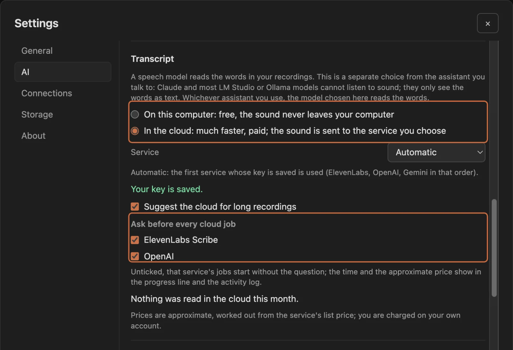
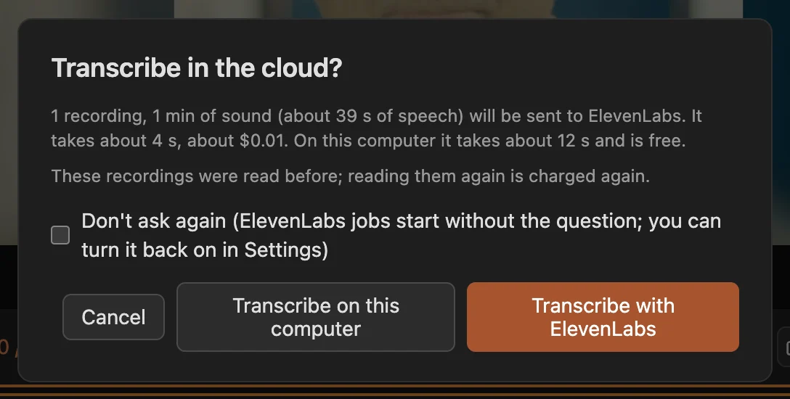

Cloud transcription
The transcript is read on your computer for free. If that is slow for a long recording, a cloud service can read it much faster, on your own key, for a small price.

Choose who reads the words
In Settings › AI › Transcript:
- On this computer: free, the sound never leaves your computer (the default).
- In the cloud: much faster, paid; the sound is sent to the service you choose.
Service: ElevenLabs Scribe, OpenAI or Google Gemini, or Automatic: the first service whose key is saved, in that order. The key is entered further down the AI tab (API keys).
The transcript model is separate from the AI model you chat with: Claude and most local models cannot listen to sound.
What is sent
Only the sound of the recordings being read, in pieces, and the names in the project's glossary. Not the picture, not the project file. With OpenAI or Gemini, a small model on this computer then times each word; it is downloaded once on first use (about 80 MB). Most Gemini keys read about 100 pieces a day, so a long recording may not finish in one day.
It asks first
- The first time for a service: Send the sound to …?, with what is sent and that the service's own terms apply. Understood, continue.
- Before each job: Transcribe in the cloud?, with how much sound, how long it takes and about what it costs, against the time on this computer. Transcribe on this computer or Transcribe with ….

Ask before every cloud job lists each service with a saved key; untick one and its jobs start without the question, with the time and price shown in the progress line.
Suggested for long recordings
With Suggest the cloud for long recordings ticked, a long local read offers to finish in the cloud, with the time and price. Don't Suggest Again stops it.
What it cost
The tab shows Cloud this month: the sound read and about what it cost. Prices are approximate, worked out from the service's list price; you are charged on your own account.